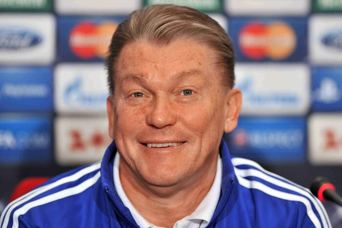
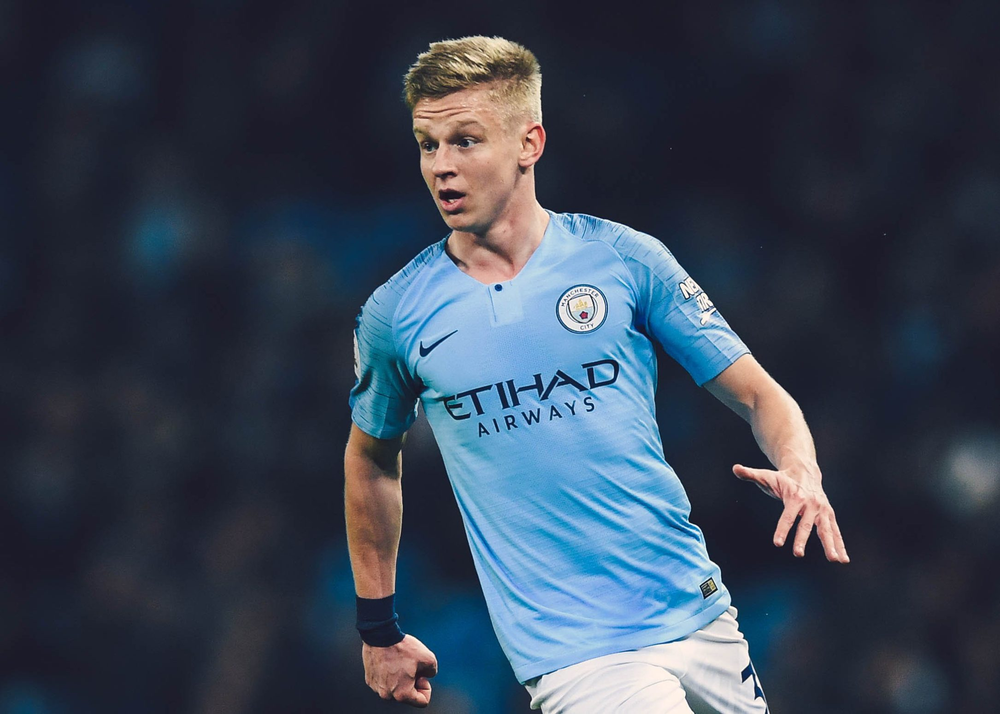

Легенди українського футболу: ТОП-10 гравців за всю історію
Історії, що сформували українську футбольну націю
Український футбол — це не просто спорт. Це емоції, великі особистості, прориви на світову арену та миті,
які змінювали хід історії
У цьому матеріалі ми зібрали десятку найвеличніших українських футболістів усіх часів — від володарів
«Золотого м’яча» до сучасних зірок, що прославляють нашу країну сьогодні.
У нижньому розділі ви знайдете розповіді про кожного гравця, їхній шлях, ключові моменти кар’єри та причини, через які вони назавжди залишилися в історії українського футболу.
-
Андрій Шевченко

Легенда нації
Шевченко — символ українського футболу та володар «Золотого м’яча». Його спринти, фірмові удари та неймовірний холодний розрахунок зробили його одним із найкращих форвардів Європи. У «Мілані» він став іконою, а його голи в Лізі чемпіонів і дербі проти «Інтера» стали частиною футбольного фольклору.
три короткі факти про Андрія Шевченко
- ⚽ Єдиний українець, який виграв «Золотий м’яч» у сучасній історії (2004)
- 🏆 Топ-скорист у дербі «Мілан» – «Інтер»: 14 голів, рекорд, що тримається роками
- 🇺🇦 Забив історичний гол у матчі Україна — Швеція на Євро-2012, принісши збірній перемогу
-
Олег Блохін
Швидкість, якій аплодував світ
Блохін — володар «Золотого м’яча» 1975 року. Футболіст неймовірної швидкості, техніки та винахідливості. Його стиль — це різкість, точність і природний талант, який визнавали в Європі десятиліттями.
три короткі факти про Олега Блохінва
- 🥇 Перший український володар «Золотого м’яча» (1975)
- 🚀 Розвивав швидкість до 100 метрів за 11 секунд, що робило його майже неконтрольованим для захисників
- 🎯 За «Динамо» забив понад 300 голів, встановивши рекорд клубу
-
Андрій Ярмоленко

Серце та характер команди
Один із найтехнічніших українських футболістів сучасності. Його фірмові зміщення з правого флангу та удари в дальній кут стали класикою. Ярмоленко — це лідерство, самовіддача та багаторічна відданість збірній України.
три короткі факти про Андрій Ярмоленко
- ⚡ Автор одного з найкрасивіших голів Ліги Європи — у ворота «Евертона» за «Вест Хем»
- 🇺🇦 Топ-2 бомбардир збірної України в історії — поступається лише Шевченку
- 🔥 Дебютував у Премʼєр-лізі України з гола вже в першому ж матчі
-
Руслан Маліновський

Гроза воротарів дальніми ударами
Маліновський — майстер ударів із дальної дистанції. Його постріли стали візитівкою в Серії A та Європі. Ігровий інтелект, художнє бачення поля та здатність змінити хід матчу однією дією роблять його унікальним.
три короткі факти про Руслан Маліновський
- 💥 Його удари входили в ТОП-10 найпотужніших ударів Серії A за показниками швидкості м’яча
- 🎯 В Італії мав сезон, де став найкращим гравцем ліги за результативними передачами серед півзахисників
- 🇺🇦 Автор гола, який приніс Україні перемогу над Польщею в Лізі націй
-
Олександр Зінченко
Універсальний геній сучасного футболу
Футболіст, здатний зіграти майже на будь-якій позиції — від флангового захисника до плеймейкера. Гра під керівництвом Пепа Гвардіоли допомогла розкрити його спокій, точність і футбольний інтелект на найвищому рівні.
три короткі факти про Олександр Зінченко
- 🧠 Наймолодший капітан збірної України за останні десятиліття
- 🏆 В «Манчестер Сіті» здобув чотири титули АПЛ — один із найтитулованіших українців в історії
- 🎩 Починав кар'єру як атакувальний півзахисник, але під Гвардіолою став елітним фланговим захисником і плеймейкером